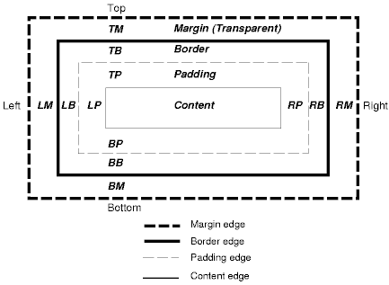

Currently only images can be included with before or after attributes.
Currently only images can be included with before or after attributes.
The polish.css file can contain different sections:
The defined colors, fonts, backgrounds and borders can be referenced in the actual style definitions. This makes changes very easy, since you need to change the value only in one position.
Each style can contain different "sections":
An example of such a complete style definition is the following:
/* this style designs the currently focused element in a list, form etc: */
focused {
/* margins and paddings: */
margin: 2;
margin-left: 5;
margin-right: 10;
padding: 1;
padding-vertical: 2;
/* font and label: */
font {
color: blue;
size: medium;
face: system;
}
label {
color: black;
size: small;
}
/* layout is centered: */
layout: center;
/* background: */
background-color: gray;
/* no border: /*
border: none;
/* before: add an image: */
before: url( arrow.png );
/* after: add another image: */
after: url( leftArrow.png );
/* no specific attributes are used in this example*/
}
All GUI items support the standard CSS box model:  The margin describes the gap to other GUI items. The padding describes the gap between the border of the item and the actual content of that item. So far no different border-widths (for left, right, top and bottom) can be set with J2ME Polish. Since this is a more bizarre and seldom used feature, not much harm is done.
The margin- and padding-attributes define the default gaps for the left, right, top and bottom elements. Any margin has the default value of 0 pixels, whereas any padding defaults to 1 pixel. Next to the left, right, top and bottom padding, J2ME Polish also knows the vertical and the horizontal paddings. These define the gaps between different content sections. The gap between the label of an item and the actual content is defined by the horizontal padding. Another example is the icon, which consists of an image and a text. Depending on the align of the image, either the vertical or the horizontal padding fills the space between the icon-image and the icon-text. In the following example, the top, right and bottom margin is 5 pixels, whereas the left margin is 10 pixels:
.myStyle {
margin: 5;
margin-left: 10;
font-color: black;
}
Percentage values can also be used. Percentage values for top, bottom and vertical attributes relate to the height of the display. Percentage values for left, right and horizontal attributes relate to the width of the display:
.myStyle {
padding-left: 2%;
padding-right: 2%;
padding-vertical: 1%;
font-color: black;
}
When the device has a width of 176 pixels, a padding of 2% results into 3.52 pixels, meaning effectively a padding of 3 pixels. At a display height of 208 pixels a vertical padding of 1% results into a padding of 2.08 pixels or effectively 2 pixels. Please note that the capability "ScreenSize" of the device needs to be defined when you use percentage values.
The layout attribute defines how the affected item should be aligned and laid out. Possible layout values are for example left, right or center. All layout values of the MIDP/2.0 standard can be used:
| Layout | Alternative-Names | Explanation |
|---|---|---|
| left | - | The affected items should be left-aligned. |
| right | - | The affected items should be right-aligned. |
| center | horizontal-center, hcenter | The affected items should be centered horizontally. |
| expand | horizontal-expand, hexpand | The affected items should use the whole available width (i.e. should fill the complete row). |
| shrink | horizontal-shrink, hshrink | The affected items should use the minimum width possible. |
| top | - | The affected items should be top-aligned. |
| bottom | - | The affected items should be bottom-aligned. |
| vcenter | vertical-center | The affected items should be centered vertically. |
| vexpand | vertical-expand | The affected items should use the whole available height (i.e. should fill the complete column). |
| vshrink | vertical-shrink | The affected items should use the minimum height possible. |
| newline-after | - | Items following an item with a newline-after layout should be placed on the next line. Currently the newline settings will be ignored, since every item will be placed on a new line. |
| newline-before | - | The affected items should always start on a new line (when there are any items in front of it). Currently the newline settings will be ignored, since every item will be placed on a new line. |
| plain | - | No specific layout should be used, instead the default behavior should be used. Such a layout does not need to be defined explicitly, but it can be useful to overwrite a basic setting. |
Layout values can also be combined, using either the "||", "|", "or" or "and" operators. All operators result in the same combination. An item can be centered and using the whole available width with following example:
.myStyle {
layout: center | expand;
}
This is equivalent with:
.myStyle {
layout: center || expand;
}
And equivalent with:
.myStyle {
layout: center and expand;
}
And equivalent with:
.myStyle {
layout: center or expand;
}
And equivalent with:
.myStyle {
layout: hcenter | hexpand;
}
And equivalent with:
.myStyle {
layout: horizontal-center | horizontal-expand;
}
Colors can be defined in the colors section and in each attribute which ends on "-color", e.g. "font-color", "border-color" etc.
The 16 standard windows colors are predefined:
| Name | Hex-Value | Color | Name | Hex-Value | Color |
|---|---|---|---|---|---|
| white | #FFFFFF | yellow | #FFFF00 | ||
| black | #000000 | maroon | #800000 | ||
| red | #FF0000 | purple | #800080 | ||
| lime | #00FF00 | fuchsia | #FF00FF | ||
| blue | #0000FF | olive | #808000 | ||
| green | #008000 | navy | #000080 | ||
| silver | #C0C0C0 | teal | #008080 | ||
| gray | #808080 | aqua | #00FFFF |
Another predefined color is "transparent", which results in an transparent area. "transparent" is only supported by some GUI elements like the menu-bar of a full-screen menu.
The colors section of the polish.css file can contain colors, which can be referenced in the styles, fonts, border and background sections. You can even overwrite the predefined colors to confuse other designers!
colors {
bgColor: #50C7C7;
bgColorLight: #50D9D9;
gray: #7F7F7F;
}
A color can be defined in many different ways:
.myStyle {
font-color: white; /* the name of the color */
border-color: #80FF80; /* a rgb hex value */
start-color: #F00; /* a short rgb-hex-value - this is red */
menu-color: #7F80FF80; /* an alpha-rgb hex value */
background-color: rgb( 255, 50, 128 ); /* a rrr,ggg,bbb value */
fill-color: rgb( 100%, 30%, 50% ); /* a rgb-value with percentage */
label-color: argb( 128, 255, 50, 128 ); /* a aaa, rrr, ggg, bbb value */
}
Color names refer to one of the predefined colors or a color which has been defined in the colors-section:
color: black; or color: darkBackgroundColor;
The hex-value defines a color with two hexadecimal digits for each color (RRGGBB). Additionally the alpha blending-component can be added (AARRGGBB).
color: #FF000; /* defines red. */ color: #7FFF0000; /* defines a half transparent red. */
The shortened hex-value defines a color by a RGB-value in hexadecimal. Every digit will be doubled to retrieve the full hex-value:
color: #F00; is equivalent with color: #FF0000; color: #0D2; is equivalent with color: #00DD22; /* and so on. */
A rgb-value starts with "rgb(" and then lists the decimal value of each color from 0 up to 255:
color: rgb( 255, 0, 0 ); /* defines red. */ color: rbg( 0, 0, 255); /* defines blue and so on. */
Alternatively percentage values can be used for rgb-colors:
color: rgb( 100%, 0%, 0% ); /* defines red as well as */ color: rgb( 100.00%, 0.00%, 0.00% );
Alpha-RGB colors can be defined with the argb()-construct:
color: argb( 128, 255, 0, 0 );
defines a half transparent red. For the argb-construct percentage values can be used as well.
Colors with alpha blending can be defined with hexadecimal or argb-definitions (see above). An alpha value of 0 results in fully transparent pixels, whereas the value FF (or 255 or 100%) results in fully opaque pixels. Some devices support values between 0 and FF, which results in transparent colors. Colors with a specified alpha channel can only be used by specific GUI items. Please refer to the documentation of the specific design attributes.
Many GUI Items have text elements, which can be designed with the font- or label-attributes.
Both attribute-groups support the same attributes:
| Attribute | Possible Values | Explanation |
|---|---|---|
| color | Reference to a color or direct declaration of the color. | Depending on the number of colors the device supports, colors can look differently on the actual device. |
| face | system (default, normal) | The default font-face which is used when the font-face or label-face attribute is not set. |
| proportional | A proportional face. This is on some devices actually the same font-face as the system-font. | |
| monospace | A font-face in which each character has the same width. | |
| size | small | The smallest possible font. |
| medium (default, normal) | The default size for texts. | |
| large (big) | The largest possible font size. | |
| style | plain (default, normal) | The default style. |
| bold | A bold thick style | |
| italic (cursive) | A cursive style. | |
| underlined | Not really a style, just an underlined text. | |
| bitmap | The name of the bitmap font. The extension ".bmf" is not needed. | With the "bitmap"-attribute a bitmap-font can be used instead of the system, proportional and monospace fonts. Please note that bitmap-fonts cannot be changed in neither size, color or style. Compare the following section for a detailed discussion of bitmap-fonts. |
An example font and label specification:
.myStyle {
font-color: white;
font-face: default; /* same as system or normal */
font-size: default; /* same as medium or normal */
font-style: bold;
label-color: gray;
label-face: proportional;
label-size: small;
label-style: cursive; /* same as italic */
}
The same specification can also be written as follows:
.myStyle {
font {
color: white;
style: bold;
}
label {
color: gray;
face: proportional;
size: small;
style: cursive; /* same as italic */
}
}
In the font-definition the above face and size attributes can be skipped, since they only define the default behavior anyhow.
Bitmap-Fonts can be used instead of the usual predefined fonts for any text elements like titles, StringItems, etc.
Bitmap-Fonts can be created out of any True Type Fonts (*.ttf) using the ${polish.home}/bin/fonteditor executable. In some cases it might be beneficial to optimize the created PNG image manually for decreasing the size of the image and making manual adjustments. The created bitmap-fonts-files (*.bmf) can also be fine-tuned using the binary data editor ${polish.home}/bin/binarydataeditor. Just select the File -> "open in binary editor"-command.
The created bitmap-font needs to be copied into the "resources" folder of the project.
The created bitmap-fonts can be used for any text-based items in the J2ME Polish GUI. They can be integrated using the "font-bitmap"-attribute. The ".bmf" extension does not need to be given. In the following example the "china.bmf" font is used for the currently focused item:
focused {
font-bitmap: china;
background-color: yellow;
layout: center | expand;
}
The bitmap-fonts can also be used directly in the program-code with the help of the de.enough.polish.util.BitMapFont class. Please compare the JavaDoc documentation for more information.
This example uses a bitmap-font for displaying a text:
import de.enough.polish.util.*;
public class MyScreen extends Canvas {
private BitMapFont bitMapFont = BitMapFont.getInstance( "/china.bmf" );
private BitMapFontViewer textViewer;
public MyScreen() throws IOException {
this.textViewer = this.bitMapFont.getViewer( "Hello World!" );
...
}
...
public void paint( Graphics g ) {
int x = 20;
int y = 50;
this.viewer.paint( x, y, g );
}
}
All GUI-Items can have a label, which is designed using the pre-defined style "label". One can specify another-style by using the "label-style"-attribute:
.myStyle {
font {
color: white;
style: bold;
}
label-style: myLabelStyle;
}
.myLabelStyle {
font-style: bold;
font-color: green;
background-color: yellow;
}
It is often advisable to use separate items for labels and contents. In that way you can get a clean design by using a table, in which all labels are placed on the left side and all input-fields etc on the right side. Tables are defined by using the "columns"-attribute of the corresponding screen.
When you want to have a line-break after each label, just add the "newline-after"-value to the layout:
label {
font-style: bold;
font-color: green;
background: none;
layout: left | newline-after;
}
Each style can define a specific background and border. There are many different types of backgrounds and borders available, of which some are even animated. A specification of a simple background and border is the following example:
.myStyle {
background-color: white;
border-color: gray;
border-width: 2;
}
This example creates a white rectangular background with a gray border, which is 2 pixel wide.
.myStyle {
background {
type: pulsating;
start-color: white;
end-color: pink;
steps: 30;
}
}
The above example creates a background which color is constantly changing between white and pink. 30 color shades are used for the animation. When no background or border should be used, the "none" value can be set:
.myStyle {
background: none;
border: none;
}
If more complex types should be used, the background- or border-type needs to be specified explicitly. The following example illustrates this for an background, which colors change all the time: The available background- and border-types are explained in detail in the sections "Specific Design Attributes for Backgrounds" and "Specific Design Attributes for Borders".
The before and after attributes can be used to insert content before or after GUI items which have the specified style. The following example adds a heart picture after the actual GUI items. The "focused" style is a predefined style which is used for lists, forms, and so on.
focused {
after: url( heart.png );
background: none;
border-type: round-rect;
border-arc: 6;
border-color: yellow;
border-width: 2;
layout: left | expand;
font-color: black;
}
Currently only images can be included with before or after attributes.